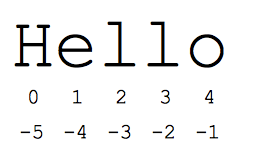
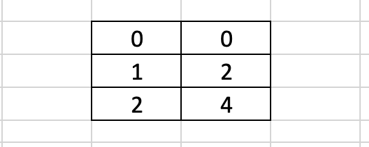
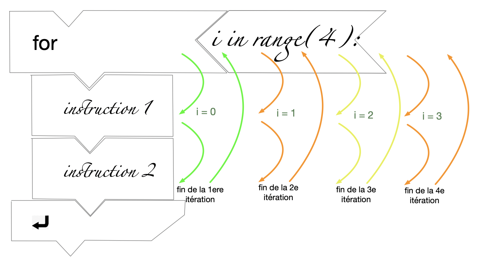
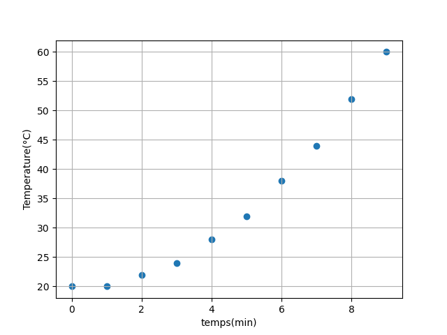

listes
Chaines de caractères, Listes et Boucles bornées
Chaines de caractères
1. Definition: Une chaine de caractère est une séquence ordonnée de caractères, mis entre guillements (simples ' ou doubles "). C’est le type str en python. Pour en savoir plus sur les chaines, on pourra consulter la page: google dev: chaines
On accède à un élément d’une chaine grace à sa position, appelée indice. Le premier élément a pour indice zero.
Un indice négatif permet d’identifier les éléments à partir de la fin: -1 pour le dernier caractère, -2 pour l’avant dernier, …
Illustration avec la chaine de caractères Hello:

exemple avec les rangs des caractères du mot Hello
2. Modifier une chaine Contrairement aux listes, il n’est pas possible de modifier un caractère dans une chaine:
3. Une fonction utile aux chaines: len
La fonction len va retourner la longueur de la chaine de caractères.
Listes
1. Definition: Une liste est une collection ordonnée d’objets.
Une liste est entourée de crochets [ ]. C’est le type list en python. Pour en savoir plus sur les listes, on pourra consulter la page: google dev: listes
On accède à un élément d’une liste grace à sa position, appelée indice. Le premier élément a pour indice zero.
La liste `voyelles` est une collection contenant les caractères

2. Modifier les éléments d’une liste
On ne peut modifier un élément d’une liste que si celui-ci existe. Par exemple, si l’on veut modifier l’élément “e” au rang zero de la liste voyelles par un “a”, il faut faire:
Par contre, la liste ne contenant que 3 éléments, du rang 0 au rang 2, on ne peut pas ajouter l’élément “u” de la manière suivante:
Mais alors, quelle est la bonne méthode pour ajouter un élément à une liste?
Il faut utiliser une méthode de liste: la méthode append
L’écriture de la méthode append se fait avec une notation pointée: liste.append(x), où x est la valeur à ajouter à la fin de liste.
3. Une fonction utile aux listes: len
La fonction len va retourner la longueur de la liste.
4. Autres méthodes de liste TRES utiles
Retirer un élément de liste: méthode
pop
Longueur d’une liste: fonction
len
5. Liste de listes Les éléments contenus peuvent aussi être une liste:
C’est la représentation d’un tableau, qui sur un tableur peut être représenté sous la forme suivante:
positions sont [0,0], [1,2], et [2,4]
Pour accéder au premier élément [0,0], on fait:
Pour accéder au deuxieme élément [1,2], on fait:
Et pour acceder au premier élément du 2e élément de positions, c’est à dire à la valeur 1, on fait:
Cela permet d’afficher ou modifier la valeur 1.
Boucles bornées
1. Definition: Une boucle bornée est un système d’instructions qui permet de répéter un certain nombre de fois toute une série d’opérations.
La syntaxe d’une boucle bornée, en langage algorithmique peut s’écrire:
En python, la syntaxe correspondante est:

demonstration avec python_puzzle. La boucle realise 4 itérations.
-
Remarques:
- Le bloc d’instruction sera executé n fois. Celui-ci peut contenir une ou plusieurs instructions, du moment qu’elles sont bien positionnées dans le bloc.
- En Python, le bloc est identifié par une indentation: un retrait par rapport au bord gauche, comprenant 2 espaces (ou 4).
- Pour sortir du bloc, on élimine l’indentation (on revient sur le bord gauche)
- La fonction
range(n)renvoie la liste des entiers de 0 à n-1. C’est un principe général en informatique, on commence toujours à compter à partir de 0, et il faut donc s’arrêter à n-1 pour effectuer n fois la boucle. - Pour chaque itération, le variant
iprend une nouvelle valeur de l’ensemble{0,1,2,... n-1}, et peut être utilisé dans le bloc d’instructions. - On peut choisir n’importe quel nom pour le variant, pas seulement
i.
-
Exemple
Remarque: range(3) va créer une liste itérable constituée des valeurs 0, 1, 2. Ce sont les valeurs prises successivement par le variant c dans for c in range(3)
2. Parcourir les éléments d’une liste L avec range(len(L))
Remarque: Rappelez-vous que len(L) est une fonction qui retourne la longueur de la liste L. Si L contient 3 éléments, alors len(L) vaut 3.
3. Parcourir les éléments d’une liste L avec in L
Ramarque: Cette fois-ci, le variant c prend successivement toutes les valeurs de la liste L.
Conclusion: Itérable et variant de boucle bornée
Les instructions for i in range(len(L)) et for c in L ont à peu près le même objectif: celui de parcourir TOUS les éléments de la liste L.
-
Ce qui est COMMUN: c’est l’utilisation du mot clé
IN, qui va créer ce que l’on appelle un itérable, c’est-à-dire une liste de valeurs qui seront proposées l’une après l’autre pour le variant de boucle. -
Ce qui est DIFFERENT: Dans le premier cas, on utilise la fonction
range, qui créé un itérable entre 0 et la valeur mise en paramètre (valeur -1 pour être exact). Ce sont par exemple les indices de la listeL.
La boucle va s’executer 5 fois. Mais à chaque fois, le variant i prend successivement l’une des valeurs dans [0,1,2,3,4]
L’instruction for c in L va, elle, créer un itérable constitué des valeurs de la liste L
Le nombre d’itération sera égal au nombre len(L), soit 4. Au cours des itérations, le variant c va prendre successivement chaque valeur de L, soit [0, 10, 20, 30]
Tracer un graphique y = f(x)
Pour tracer un graphique y=f(x), il faut disposer de 2 listes de mêmes dimensions x et y. Les coordonnées des points sont alors:
- (x[0],y[0]) pour le point M0
- (x[1],y[1]) pour le point M1
- …
On utilise la fonction plt.scatter (nuage de points) ou bien plt.plot (courbe) du module matplotlib.pyplot qui est importé à la premiere ligne du script de la manière suivante: import matplotlib.pyplot as plt
Les 2 listes sont positionnées entre parenthèses, dans l’ordre (liste des X, liste des Y). Ce sont les arguments de la fonction plt.scatter (ou de plt.plot).

Travaux pratiques
-
Lien vers l’énoncé du TP4: Tableaux Excel et tableaux Python
-
Lien vers l’énoncé du TP5: Listes
-
Lien vers l’énoncé du TP6: boucles et parcours de listes